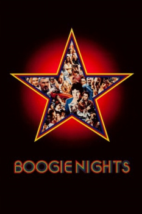

Country:United States, 156 minutes
Spoken languages:
Genres:Drama
Director(s):Paul Thomas Anderson
Writer(s):Paul Thomas Anderson
Video Codec:Unknown
Number: 1712


Certification:R
Storyline:
Set in 1977, back when sex was safe, pleasure was a business and business was booming, idealistic porn producer Jack Horner aspires to elevate his craft to an art form. Horner discovers Eddie Adams, a hot young talent working as a busboy in a nightclub, and welcomes him into the extended family of movie-makers, misfits and hangers-on that are always around. Adams' rise from nobody to a celebrity adult entertainer is meteoric, and soon the whole world seems to know his porn alter ego, "Dirk Diggler". Now, when disco and drugs are in vogue, fashion is in flux and the party never seems to stop, Adams' dreams of turning sex into stardom are about to collide with cold, hard reality.
Cast:


Medium: Original DVD,
Loaned: No
Aspect ratio: Unknown